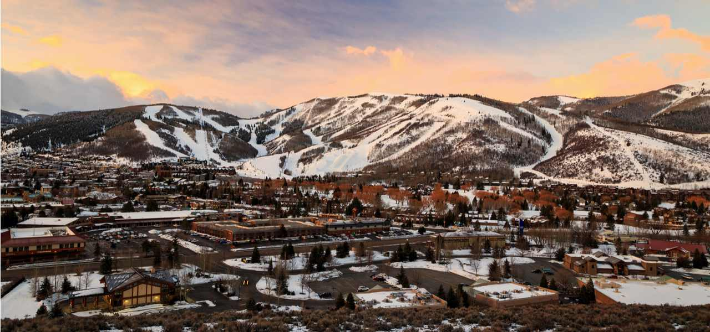
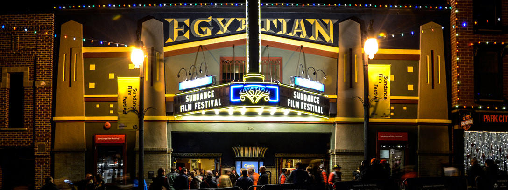

January 23 to February 2, 2020
Getting Around
Our 10-day Festival welcomes more than 124,000 attendees and spreads out acrosst hree locations: Park City, Salt Lake City, and the Sundance Mountain Resort near Provo.
Each city is separated by a 30 to 75 minute drive, so make sure you select screening tickets in the city where you plan on spending most of your time.

Ticketing
There are so many ways to enjoy the Sundance Film Festival!
Purchase a pass, a ticket package, or individual tickets in advance or catch a last-minute screening through the eWaitlist
Please note, ticket holders must be in line 15 minutes before the scheduled start time or their seat may be forfeited.

Theaters
At Sundance Institute, we believe in the magic of the cinematic experience. Nothing can replace discovering a new flmmaker or movie with a community of independent film lovers. To honor the craftsmanship of our filmmakers, each of our theaters is outfitted with Dolby Digital Sound and projected with Barco D-Cinema projectors.